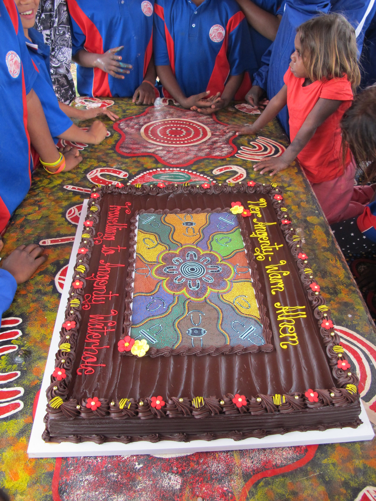
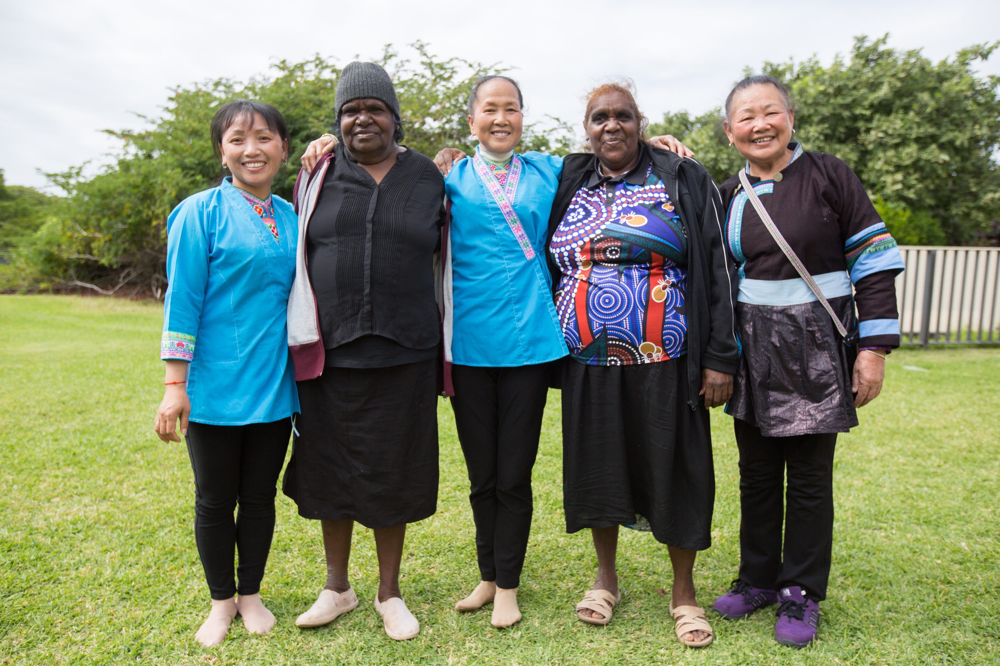
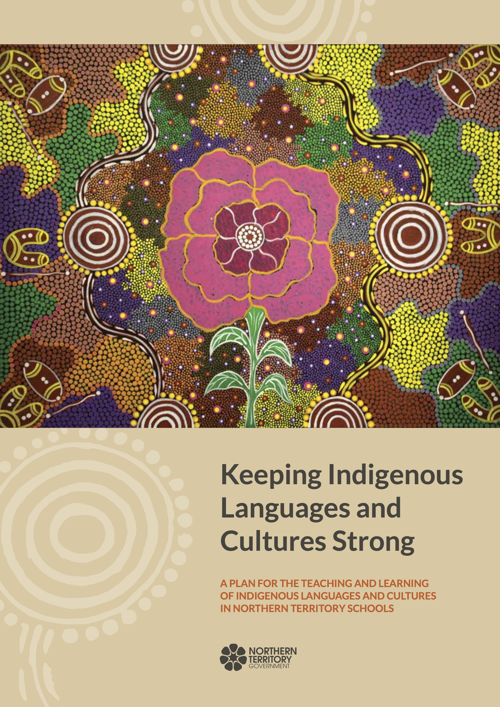
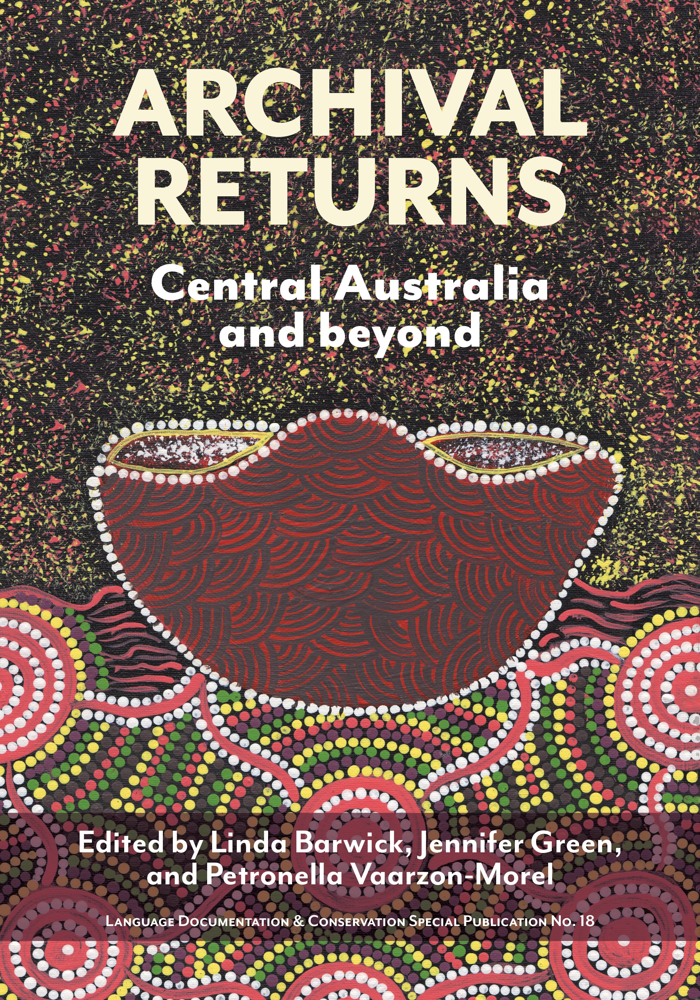
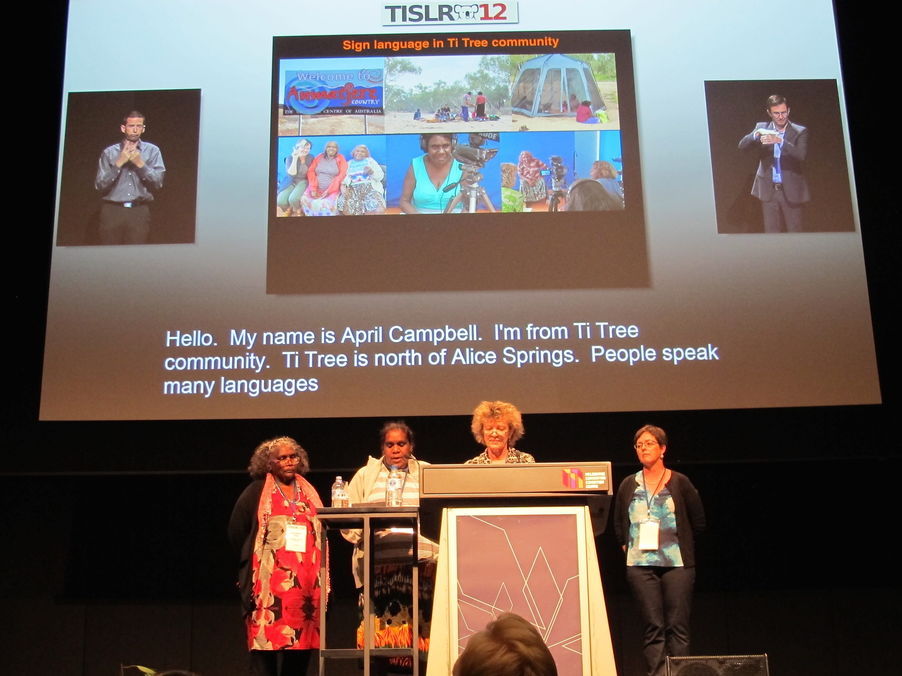
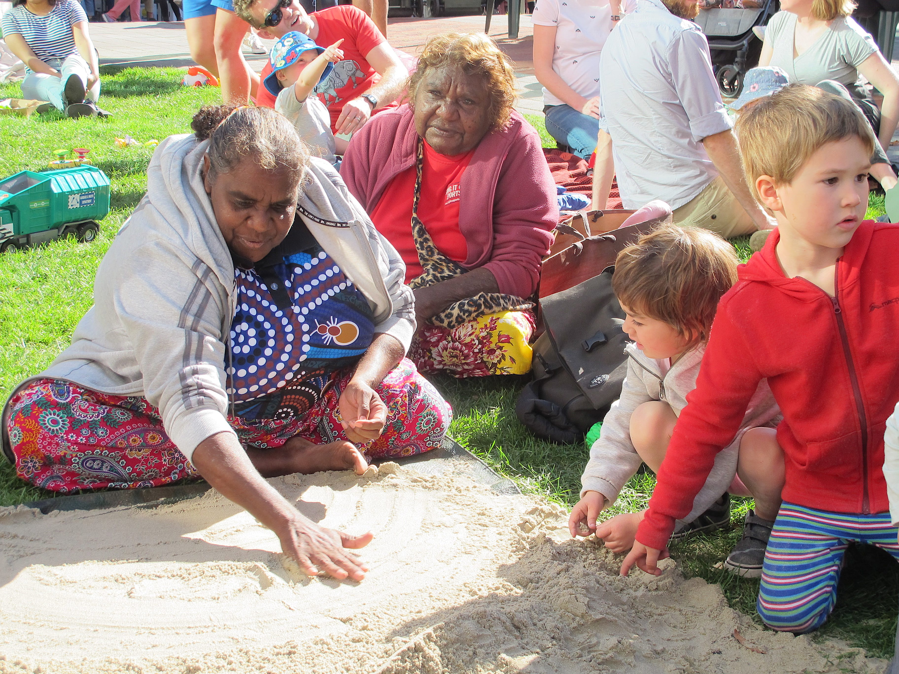
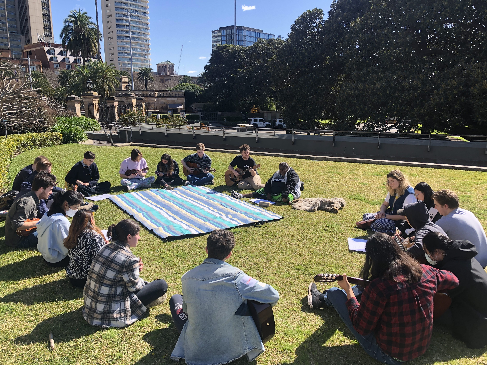

Published works:
Campbell, Gayle Pengart, Sarah Ngwarrey, Eileen Pwerrerl Campbell, Josie Ngwarrey Rose, Betsy Mpetyan Presley & Cedric Ngal Cook. 2007. Thep map. Ti-Tree. Retrieved 2026, February 26, from https://hdl.handle.net/10070/865711.
Presley, Don, Paddy Kemarr, Betsy Mpetyan Presley, Eileen Pwerrerl Campbell, Sarah Ngwarray Cook, Janie Mpetyan, Clarrie Kemarr Long, Josie Ngwarray Rose, Lana Ngwarray Campbell, Gayle Pengart Campbell, Kathleen Napaljarri Haines, Margaret Carew & David Strickland. 2009. Angkety anwern-kenh angkwey. Institute for Aboriginal Development Press, Alice Springs. Retrieved 2025, September 23, from https://hdl.handle.net/10070/885005.
Presley, Betsy Mpetyan, Eileen Pwerrerl Campbell, Clarrie Kemarr Long, Josie Ngwarray Rose, Molly Napurrula Presley, Janie Mpetyan Cook, Helen Kemarr Long, June Kemarr Ross, Mary Nangala Allan, Cecilia Kemarr Tilmouth, Tiffany Nakamarra Ross, Petronella Napaljarri Long, Jessie Napangardi Presley, Priscilla Nakamarra Long, Sonia Penagk Drover, Virginia Napanangka Fry, Marie Kemarr Long, Northern Territory Library & Anmatyerr people in the Ti Tree region. 2010. Maty, angey, ampelyerrk akwek. Northern Territory Government, Darwin. Darwin, N.T.: Northern Territory Library. ISBN 9781741312195 Retrieved 2025, September 23, from https://hdl.handle.net/10070/774132. Film can be viewed at https://www.iltyemiltyem.com/film/page/2/
Turpin, Myfany, Katherine Demuth & April Ngampart Campbell, ‘Arandic Baby Talk’. 2014. In Rob Pensalfini, Myfany Turpin & Diana Guillemin, eds., Language Description Informed by Theory [Studies in Language Companion Series 147]. John Benjamins: Netherlands. Pp. 49–79.
Campbell, April Pengart, Clarrie Kemarr Long, Jennifer Green, and Margaret Carew. 2015. Mer Angenty-Warn Alhem. Travelling to Angenty Country. Darwin: Batchelor Press. ISBN 9781741312966
Myfany Turpin, April Pengart Campbell, Catherine Ingram, Wu Meifang, Wu Pinxian, Wu Xuegui, & Wu Zhicheng, 2017. Songs of home: Anmatyerr and Kam singing traditions: [Batchelor, Northern Territory: Batchelor Institute Press, 2017] ISBN 9781741313321

Launch of Mer Angenty-Warn Alhem. Travelling to Angenty Country. Ti Tree DATE
Jennifer Green
Campbell, April Pengart, Stephan Claassen, Jennifer Green, & Veronica Perrurle Dobson. 2020. Playing with the long strings: A structural analysis of Arandic string figures. Bulletin of the International String Figure Association, 27, 30–136.
Multimedia
‘Songs of Home’. 2 x 15 min TV documentaries directed by Shiloh Jarrett. ‘Episode 1’ Aired on Our Stories SBS-NITV on 4 December 2018 7pm. ‘Episode 2 April Campbell.’ Aired on Our Stories SBS-NITV on 25 December 7pm.

Songs of home project, Sydney Conservatorium of Music, 2017.
Anna Zhu
Watts, Lisa Patricia, & April Pengart Campbell, c 2009, Mer Rrkwer-akert: Brooks Soak Country, Awely Rrkwer-akert: Women’s songs from Brooks Soak Country. [Darwin, N. T.]; Ti Tree, N. T.: Charles Darwin University and Anmatyerr Knowledge Centre. Two DVDs.
Watts, Lisa Patricia, April Ngampart Campbell, Clarrie Kemarr Long & Myfany Turpin, Awely Rrkwer-akert. 2009. Ethnographic film featuring Anmatyerr knowledge of the country, totems and ceremonies of Mer Rrkwer. Central Australian Research Network, Alice Springs, NT. 2 videodiscs (DVD) (25 min.).
Contributions to:
Green, Jennifer, 2003. The Central Anmatyerr Picture Dictionary. IAD Press. Alice Springs.
Green, Jennifer, 2010. The Central and Eastern Anmatyerr to English Dictionary. IAD Press. Alice Springs.
Barwick, Linda, Mary Napaljarri Laughren, & Myfany Turpin. 2013. Sustaining women's Yawulyu/Awelye: some practitioners’ and learners’ perspectives. Musicology Australia Volume 35, number 2 (December 2013), pp. 191-220.
Green, Jennifer, 2014. Drawn from the ground: Sound, sign and inscription in Central Australian Sand Stories. Language, Culture & Cognition Series, Cambridge University Press.
Bowman, Marg, & Central Land Council (Australia). 2015. Every hill got a story: we grew up in country / men and women of Central Australia and the Central Land Council. Richmond, Victoria: Hardie Grant Books (Australia). pp. 82, 160, 178, 241, 243.

Campbell, April 2016, The Desert Rose — The Story of Anmatyerr Language at Ti Tree, Painting, Department of Education, Darwin
Megan J. Morais [and thirteen others] 2019. Yawulyu: art and song in Warlpiri women's ceremony. Canberra, ACT: Aboriginal Studies Press, 2025. ISBN 9781922102812
Linda Barwick, Jennifer Green, & Petronella Vaarzon-Morel (eds) 2019. Archival Returns: Central Australia and Beyond, Language Documentation & Conservation. ISBN: 978-0-9973295-7-5. https://nflrc.hawaii.edu/ldc/sp18-archival-returns-central-australia-and-beyond/
Inge Kral, Samantha Disbray & Jennifer Green (Compilers), 2022. Arlkeny map-akert / Australian Indigenous Languages Image Bank ‘AILIB’. Collection AILIB at catalog.paradisec.org.au [Open Access]. https://dx.doi.org/10.26278/GY4E-MH93
Angela Harrison & Samantha Dispray (Compilers), 2022. Mangurr-jangu mirlamirlajinjikki. Teaching and Learning with Pictures. First Languages Australia, Institute for Aboriginal Development.
Painting nhenh panth-akert thang mpwarek. Panth nhenh anem tyeperr
impen anwantherr-henh arnang maparl arntwerrkem. Angkwey tyerrty
mapel angernetyart arnang map panthelayel. Angkwey inang intey-warn
akwernetyart arnang anantherr-henh map arntar-iletyek. Panth nhenh
rlterrk anem, arnang map arntar-ilenhilenh, archive-el arntwerrkem-artek
arnang map anantherr-henh. Arlkeny panthelayel anem amer map-akert
thwen angkety map-akert. Merarrp merarrpel angetyam inehenh arnang
map panth angerr nhenh-warn arntwerrketyek.
I made this painting of a coolamon. This coolamon holds our important
knowledge. In the old days Indigenous people used to carry things around
in coolamons. They used to store their important things in caves to look
after them and keep them safe. This coolamon is strong and is used for
looking after things, just like archives hold our knowledge. The designs on
the coolamon represent the landscape of the land and the languages. The
circles represent all the communities that bring their cultural materials to
the ‘big coolamon’ for safekeeping.
April Campbell

April Campbell designed the cover for Archival Returns: Central Australia and Beyond.
Jennifer Green
Closing the Gap of Indigenous Disadvantage (Australia)
Case study Working on Country: Anmatyerr (Ti Tree) Rangers, Northern Territory
Australia. Canberra, A.C.T.: Commonwealth of Australia, ©2012
Presentations and teaching
2014 WANALA conference, Broome, 3-5 September. April Campbell, Clarrie Long, Margaret Carew see https://www.iltyemiltyem.com/film/page/2/
2014 ‘Phonological Characteristics of Arandic Baby Talk’ Katherine Demuth, Myfany Turpin & April Ngampart Campbell. Paper accepted for the 13th International Congress for the Study of Child Language, University of Amsterdam, 14-18 July.
2016 Sign language documentation in a cross-modal contact zone. TISLR, Melbourne January 2016 (with Margaret Carew, April Campbell, Clarrie Long, Janie Long, Jennifer Green, & Lizzie Marrkilyi Ellis).

Lizzie Marrkilyi Ellis, April Pengart Campbell, Jennifer Green and Margaret Carew present at TISLR, Melbourne 2016
2018 Presentation at Hobart Language Day. Aboriginal Sign Languages. With April Campbell and Clarrie Long, 22 April, 2018.

April Campbell and Clarrie Kemarr Long demonstrating tyepety ‘sand stories’, Hobart, 2018.
Jennifer Green
2019 Tie-em up: Playing with the long strings (Jennifer Green, April Pengart Campbell, Stephan Claassen). Second International Workshop on String Figure-Making Practices 19–21 June 2019, School of Archaeology and Anthropology, ANU Canberra.
2021 Jennifer Green, April Pengart Campell, Ben Foley & Angela Harrison. The Iltyem-iltyem sign languages project. Knowledge Intersections Symposium. Batchelor Institute, Alice Springs (by zoom).
2022 April Pengart Campbell teaching courses in music and ethnomusicology at the Sydney Conservatorium of Music.

April Pengart Campbell teaching music education students, Sydney Conservatorium of Music, 2022.
Myfany Turpin.
2023 CALL sponsored a team of delegates to attend the Puliima Indigenous Language and Technology Conference on Larrakia Country, Darwin, August 2023. April Campbell, Emmanishia Pepperill and Cindy Presley presented on the Ti Tree School language program and everyone shared the story of the Talking Tracks project. The team also gave an overview of the language training courses that CALL offer.
2024 Myfany Turpin & April Campbell ‘Biota, Country and Kin. University of Sydney Public Linguistics Lecture, Chau Chuk Wing Museum, University of Sydney, August 21
2024 Making Iltyem-iltyem – an on-line resource for Australian Indigenous sign languages. University of Sydney Aboriginal Sign Language Forum 2024, Friday 23 August 2024 (April Campbell & Jennifer Green).